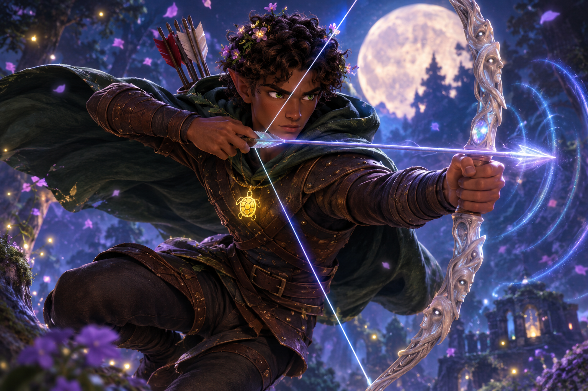

Half-Elf Ranger · Fey Wanderer · Level 5

Mogneuss was named after his father, a Black human woodcutter who married a white elven wanderer named Saelith. When a fever swept through their town, both parents were gone within a week, leaving three children with nothing but the family name.
His older brother Caedric kept them alive on the streets, while Mogneuss slipped into the forest with a homemade bow to hunt for food. His little sister Lysa was the reason they kept going. Then the cult's master came and took her. Caedric swore he would bring her back, told Mogneuss to wait, and was never seen again.
Mogneuss waited for years. Now he is done waiting. He still wears the yellow turtle pendant Lysa gave him, and every arrow he fires brings him one step closer to finding his family.
Quiet, guarded, and hard to impress, Mogneuss watches everything and says very little. He rarely laughs, but when the troupe got scammed on a 36 gold healing potion that was really worth 36 silver, even he couldn't hold it in. Being left behind once made him fiercely loyal: he will not lose anyone else.
In Moon Hallow, a one-legged weaponsmith named Christo upgraded Mogneuss's longbow with a banshee opal. The bow is now pale silver-white, carved with wailing faces, with a glowing opal in the grip. The first time Mogneuss drew it, the bow screamed so loudly the whole market covered their ears. He held on until it accepted him.
During the Festival of the Moon, Mogneuss climbed a 30 foot pillar in the colosseum and fired a single arrow that burst into a Hail of Thorns, dropping the rogue Xerathis and wounding the ranger Nerreza behind her.